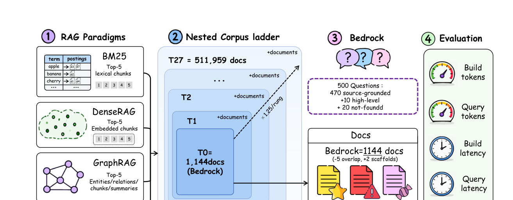
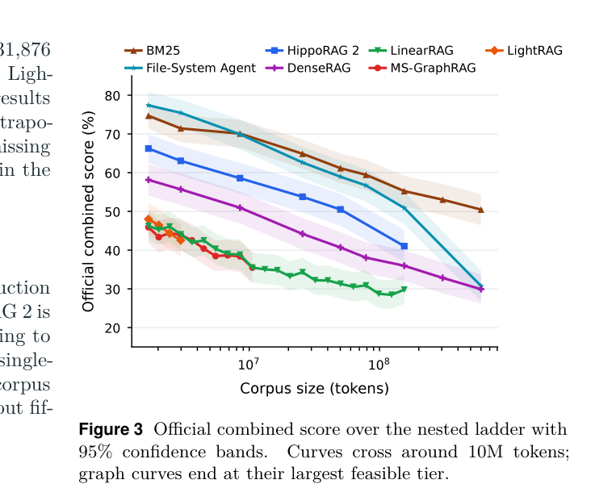
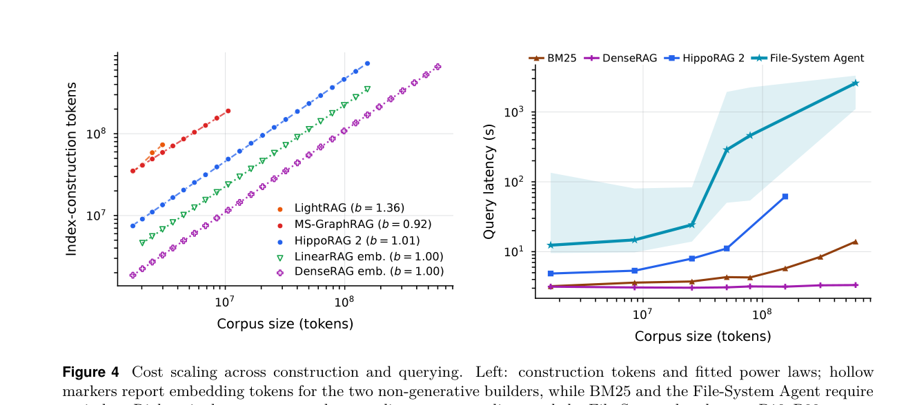

先说结论
论文的核心价值，是把 lexical、dense、graph-based 和 agentic retrieval 放进同一个 reader、judge、问题集与计量框架中比较，回答了一个部署中经常被忽略的问题：知识库变大以后，检索方法的准确率和成本如何一起变化？
实验设计：控制变量比“模型排行榜”更重要
作者使用 EnterpriseRAG-Bench：511,959 个文档、约 600.8M tokens、500 个问题，覆盖 wiki、聊天、工单、邮件、会议记录、CRM 和代码评审等来源。每个问题的相关文档、对抗性干扰文档和问题本身，从最小层级开始固定不变；只按一个确定的、来源与噪声分层的顺序加入背景文档。

比较的七条 pipeline
BM25DenseRAGHippoRAG 2LinearRAGMS-GraphRAGLightRAGFile-System Agent
所有方法最终都交给同一个 Qwen3.6-27B reader 回答；BM25、DenseRAG 和 HippoRAG 2 使用相同 chunk 切分；每种方法最多取 top-5 chunks。指标同时包含答案得分、文档召回、构建 token、查询 token 和端到端延迟。
结果：规模一上来，全球排序胜过逐步探索
在最小 bedrock 上，File-System Agent 得分 77.4，BM25 得分 74.7，两者区间重叠；但规模扩大后，Agent 需要不断列目录、搜索、读取和回溯，序列探索的误差与 token 成本一起累积。约 10M tokens 处 BM25 与它交叉，完整规模上 BM25 为 50.5，File-System Agent 为 30.7，DenseRAG 为 29.9。

| 方法 | 查询 tokens/题 | 完整规模得分 |
|---|---|---|
| BM25 | 5.8K | 50.5 |
| File-System Agent | 226K（bedrock） | 30.7 |
| DenseRAG | 4.9K | 29.9 |
一个重要细节是：Agent 并非所有问题都输。在文档内推理、项目问题、完整性和冲突信息上，它在某些规模仍然有优势；BM25 则在多数基础查找类问题上更稳。
成本：图方法把账单搬到了离线，Agent 把账单放到了在线
BM25 不需要 LLM 构建索引，查询成本近似与 corpus size 无关。DenseRAG 的构建主要是 embedding pass，也能完成全库；图方法则要先抽取实体、关系、社区或事实，构建 token 随语料增长，并出现资源墙。

论文给出的 full-scale 外推很有冲击力：HippoRAG 2 约 2.9B generative tokens，MS-GraphRAG 约 7.9B，LightRAG 约 102B；而 File-System Agent 在 full scale 下有 31% 的预算耗尽。这里的结论不是“图一定没用”，而是必须把构建可行性纳入 RAG 评估，而不能只看一个小语料上的准确率。
对 grep-first 知识库的直接启示
推荐的落地组合
把全局候选发现交给 BM25/grep/倒排索引，把局部理解、证据核验、冲突处理交给 Agent。Agent 应该在排名后的候选集合上工作，而不是从原始文件树盲目探索。
可以迁移到现有 Harness 的四点
- 文档入库时生成稳定的 title、source、date、section、keywords 和 aliases，确保 grep 能命中法律条款、产品名、缩写和别名。
- 先用关键词、字段过滤和 BM25 做宽召回，再让 Harness 对 top-k 证据做重排、去重、补读和回答。
- 把每次回答的 query tokens、候选数量、实际读取文件、延迟和是否 abstain 记录下来；不要只记录最终答案。
- 为知识库建立嵌套测试层级：固定问题与干扰文档，逐步加入背景文档，观察准确率是否出现规模拐点。
边界与我的判断
这是一次严谨的控制实验，但结论依赖 EnterpriseRAG-Bench、固定 reader、固定 top-5 和 80-call Agent budget；它证明的是在该任务与配置下的 scaling behavior，不是对所有领域的普遍定理。中文法律库、强表格场景、跨文档关系推理，仍应单独验证。
更准确的工程结论是：不要把“Agentic”误解成“让 LLM 自己找所有东西”。在大规模知识库里，结构化候选发现通常应该由便宜、全局、可复现的排序器承担；LLM 的预算应留给需要判断的部分。